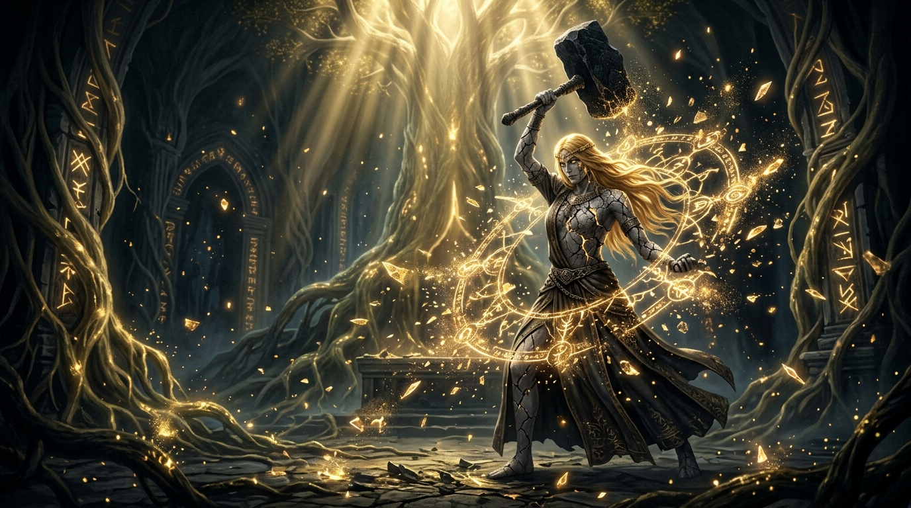
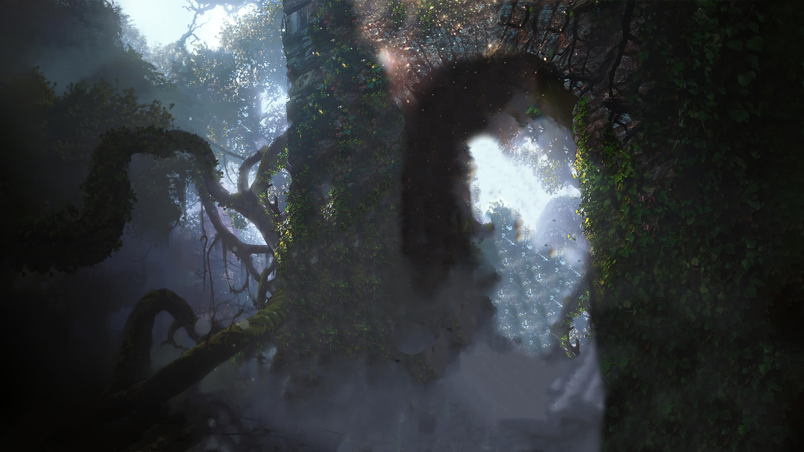
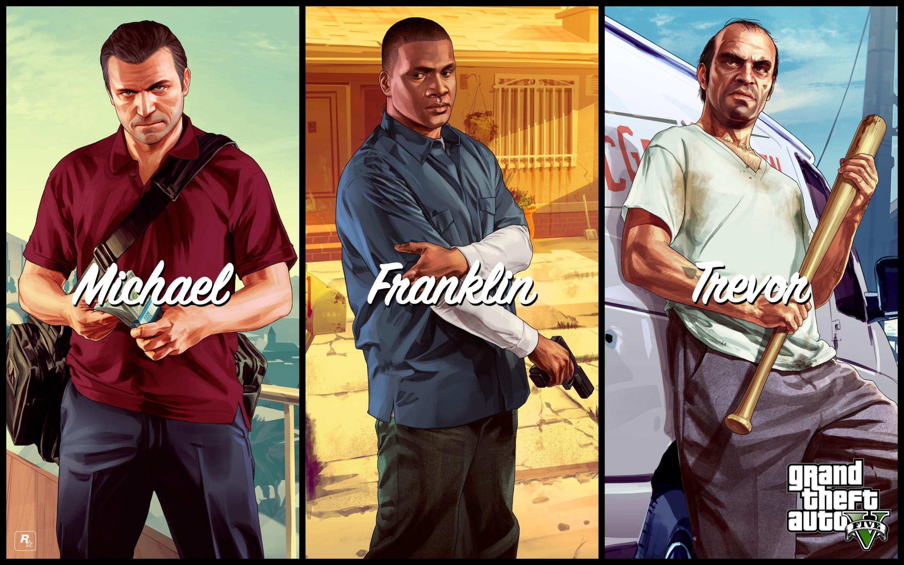
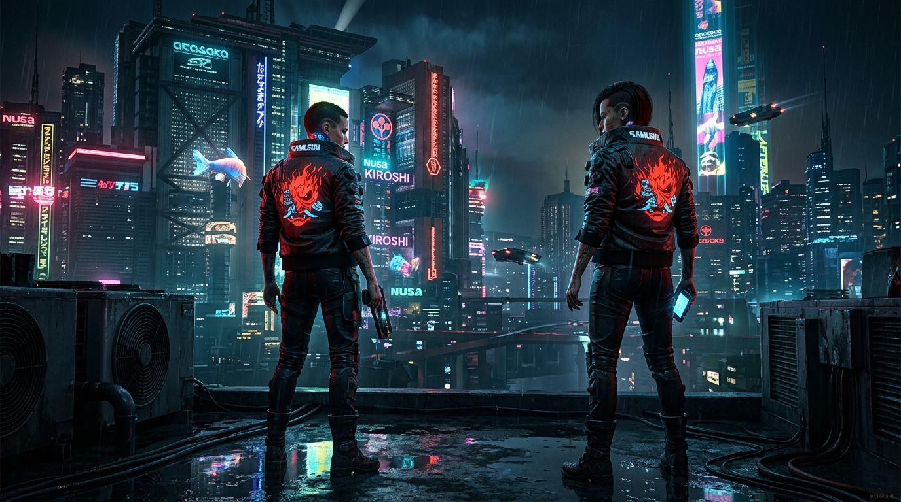
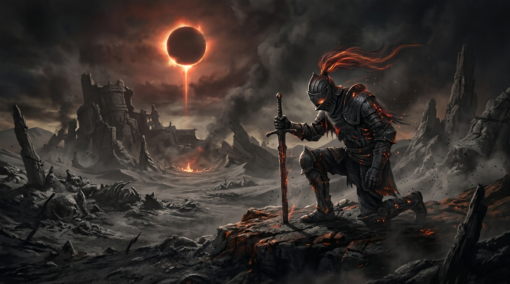

七部游戏的中文剧情解析视频，章节跳转，把因果讲明白。
7 部游戏 · 总片长约 22 分钟

黄金律法前因与群星破晓
六幕 · 3 分 27 秒 · 1080P 30FPS

狂猎阴影下的千里寻女与长者之血破晓
六幕 · 3 分 58 秒 · 1080P 30FPS

洛圣都三叉戟的爱恨情仇与世纪大劫案
六幕 · 3 分 51 秒 · 1080P 30FPS
无法之徒的穷途末路与崇高救赎
六幕 · 3 分 44 秒 · 1080P 30FPS

夜之城绞肉机与向死而生
六幕 · 3 分 36 秒 · 1080P 30FPS

万年传火因果与终局破晓
六幕 · 2 分 51 秒 · 1080P 30FPS
史诗交界地编年史，五章速览
五章 · 1 分 05 秒 · 1080P 30FPS